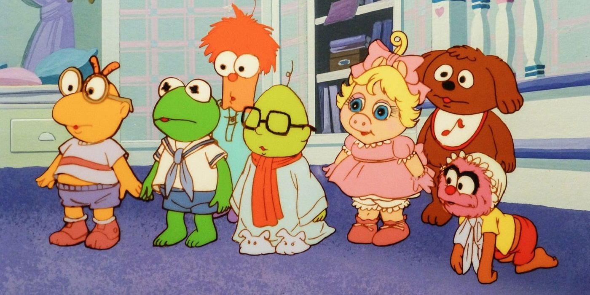
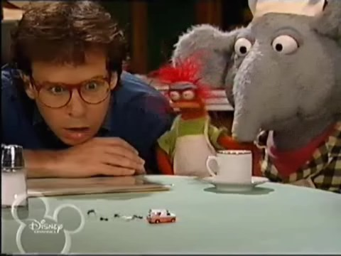
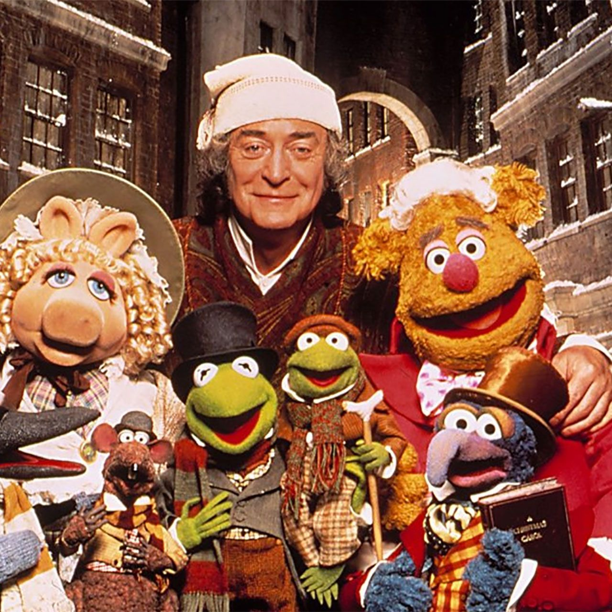
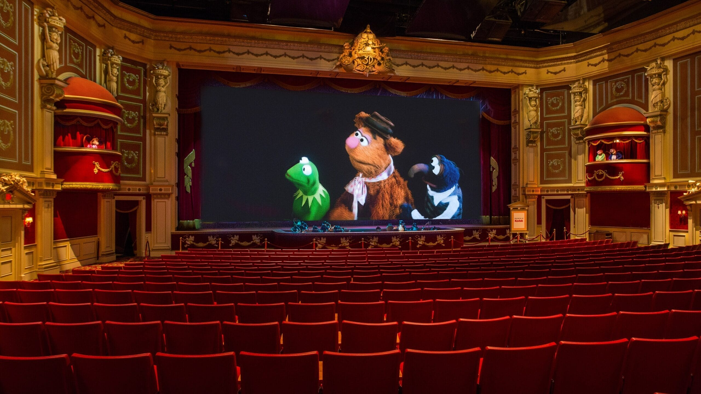
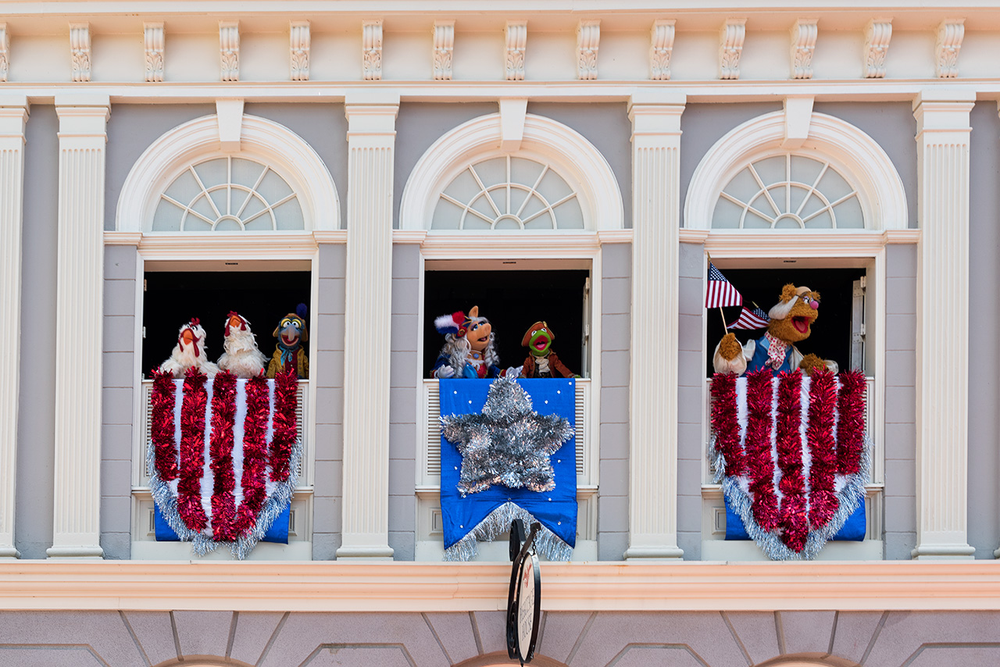
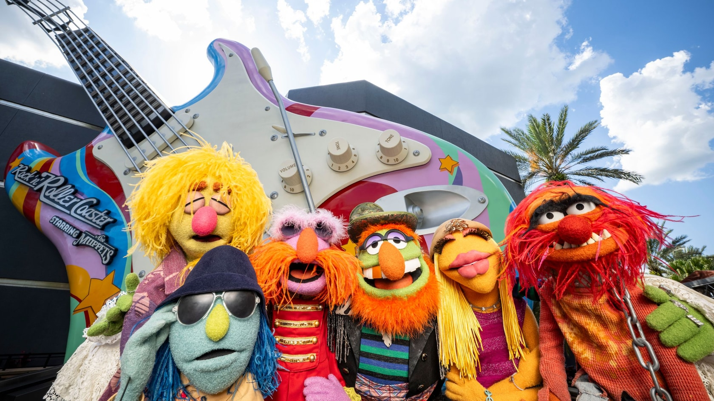

Shows

Jim Henson's Muppet Babies was a show that was on tv from September 15, 1984 to November 2,1991. It ran for 8 seasons with 107 episodes. The inspiration for the show came from a dream sequence of Miss Piggy from the 1984 movie The Muppets Take Manhattan.
In the show, the muppets are toddlers, living together and being cared for by a woman named Nanny. Like some cartoon shows, Nanny's face was never seen, just from the neck down. Each episode show muppets like Kermit, Miss Piggy, Gonzo, Rowlf the Dog, Fozzie Bear, Animal, Scooter, and Skeeter using their imagination and picturing their themselves in situations that required them to use their imagination to solve their problems.
What was unique about the show was it's visual style. They would be placed in live-action backgrounds while the babies were still in their cartoon form.

From 1996 to 1998 on ABC and Disney Channel, the Muppets Tonight show. This show was a continuation from original show that featured old and new muppets like Bobo the Bear and Pepe the King Prawn. During the show, it was shown that that Kermit the Frog and the muppets running their own tv channel and studio. like the previous show, it featured various sketches and a guest star. This show also had parodies of popular shows such as ER being called E-I-E-I-O-R and Baywatch being called Bay of Pigswatch.
There have been other shows such as The Muppets (2015-2016), Muppets Now (2020), and The Muppets Mayehm (2023). The most newest special was the The Muppets Show special that was shown on February 4, 2026. It celebrated 70 years of the Muppets and featured Sabrina Carpenter as their guest star.
Movies
- The Muppets Christmas Carol
- Muppet Treasure Island

On December 11, 1992, one of the greatest Christmas movies was released in theaters. The Muppet Christmas Carol was produced and directed by Jim's son, Brian Henson. It was the first movie produced after Jim's passing. The movie stars Michael Caine, who plays Ebenezer Scrooge, alongside the muppets in the adpative tale of A Christmas Carol by Charles Dickens.
Gonzo and Rizzo Rat are the narrators of the tale and narrates the story of Scrooge, a miser, who despises Christmas. On Christmas Eve, he rejects going to his nephew's holiday party, refuses to give money to charity to Bunsen and Beaker, and reluctnatly give Bob Cratchit, who is played by Kermit the Frog, and other bookkeepers the day of Christmas off. That night he is visited by Jacob and Robert Marley, who are played by Statler and Waldorf, and is warned that he will be visited by the Ghosts of Christmas Past, Present, and Future. This night makes him realize he needs to have a change of heart.
In order for Michael Caine to play with the Muppets, he said: "I'm going to play this movie like I'm working with the Royal Shakespeare Company. I will never wink, I will never do anything Muppety. I am going to play Scrooge as if it is an utterly dramatic role and there are no puppets around me." For the production, it was filmed in England. Caine had to walk across planks in order to interact with the muppets. The perspective of the buildings had to be played around with in order to make it feel like the streets of London were long. On December 9, 2022, the song "When Love is Gone" was restored, The song was sang between Scrooge and Belle. Belle sings sadly about how his greed for money took over his love for her. This song was only released in DVD, cut from the theater release. Now everyone has the ability to watch it in its natural form rather than hearing it at the end credits of the movie.

On February 16, 1996, the movie Muppets Treasure Island was released in theaters. It's based off the 1883 novel, Treasure Island by Robert Louis Stevenson. The film is about a young Jim Hawkins, who is played by Kevin Bishop, and his friends, Gonzo and Rizzo, taking a treaure map to proteact it from pirates. The three of the them go to Squire Trelawney, played by Fozzie Bear, and they set sail to go and find the treasure. The ship is commanded by Captain Smollett, played by Kermit the Frog, and other fellow muppets. Long John Silver, the cook of the ship, is played by Tim Curry, and he other pirates have planned to steal the treasure. Hawkins and friends must fight against Silver and his pirates to protect the treasure.
There is a Muppets movie for everyone. If you are looking to watch all of them, are at least one of them, I recommend looking through this list right here from "The Tough Pigs".
Attractions

The last project Jim Henson worked on was an attraction for Disney's Hollywood Studios in Walt Disney World and at Disney California Adevnture at the Disneyland Resort. On May 16. 1991, on the first anniversary of Jim Henson's passing, Muppet*Vision 3D opened to the public. The attraction was a 15-minute 3D show with 4D elements such as soap bubbles floating down to the audience, smoke, lighting, and animatronics such as the Penguines and Swedish Chef. The queue of the attraction featured a preshow that informed guests about the new technology they were about to experience. The queue itself was full of references to The Muppets Show. The show is about Dr. Bunsen Honeydew's 3D sprite, Waldo C. Graphics, is releaseed into the studio and causes mayhem throughout the show.
On November 1, 2014, the attraction closed at Disney California Adventure. The top of the sign for the attraction featured a giant Kermit the Frog. The Jim Henson Company recieved the statue back and placed it on one of their buildings on their company's lot. On June 8, 2925, the attraction closed at Disney's Hollywood Studios to make way for a new land. If you would like to see the show, here's a decent video of it right here.

At Magic Kingdom at Walt Disney World, the show The Muppets Present... Great Moments in American History played in the Liberty Square area. From October 2,2016 to February 17,2020, the show played about almost daily. The Muppets were performed live with puppeteers with synchronized dialogue. The show was about an abridged account of Colonial American History. The show took place in front of the Hall of Presidents attraction. The sketches within the show performed the Declaration of Independence and the Midnight Ride of Paul Revere. Kermit the Frog, Miss Piggy, Fozzie Bear, Sam Eagle, and Gonzo were the Muppets that starred in the show.

On May 26, 2026, the coaster attraction Rock 'n' Roller Coaster Starring the Muppets opened. Rock 'n' Roller Coaster was already an existing ride that opened March 16, 2002 and it's coater that shoots riders from 0 to 57 MPH in 2.8 seconds. Guests can expierence up to 5 Gs and features a sea serpent and a corkscrew.
The new retheming features a storyline with Dr. Teeth and the Electric Mayhem, getting ready to headline a big concert in Hollywood. The band is late, but Scooter's uncle, J.P. Grosse, gives out VIP tours of the studio to guests. The preshow features the Electric Mayhem, Kermit the Frog, Bunsen and Beaker, telling the storyline of the ride. Guests then board a L.I.M.O. that launches them from 0 to 57 MPH. There are 5 different songs that are covered by the Muppets and one of those five will play along the ride. The current covers aren't anywhere to be listen to, but the original songs can be heard here.